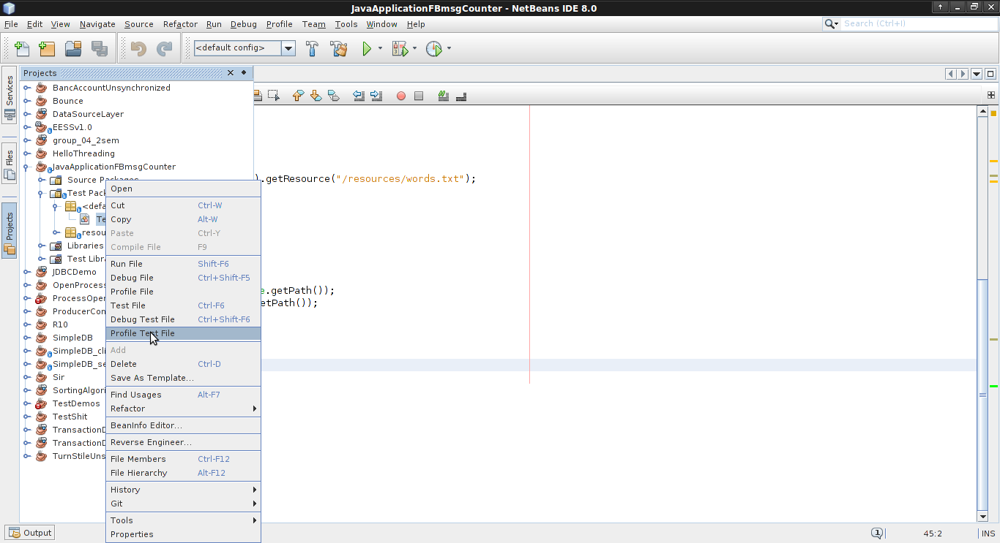
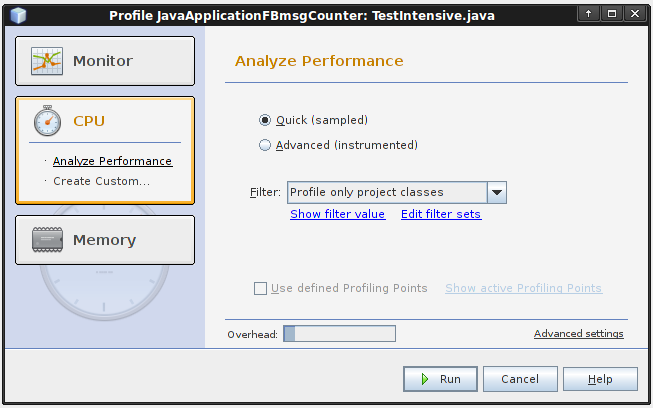
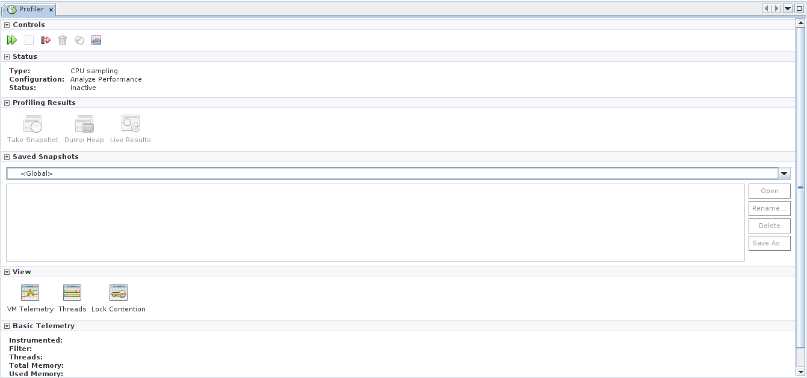
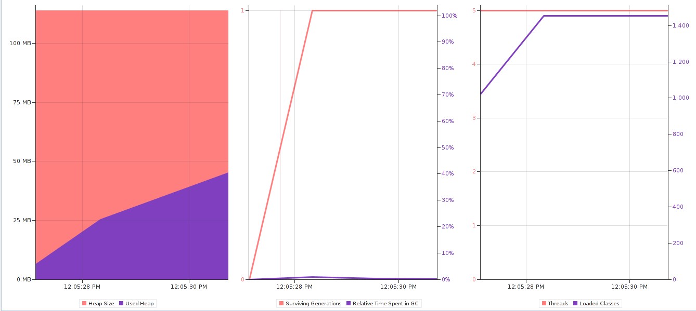
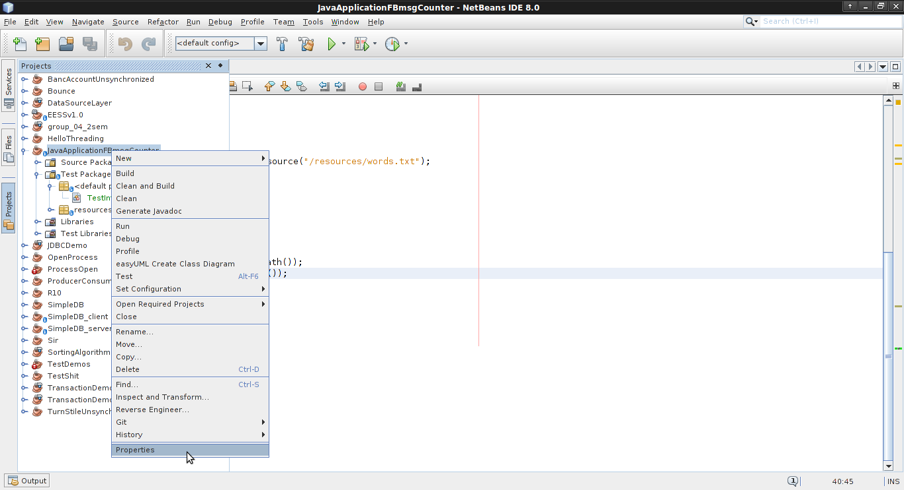
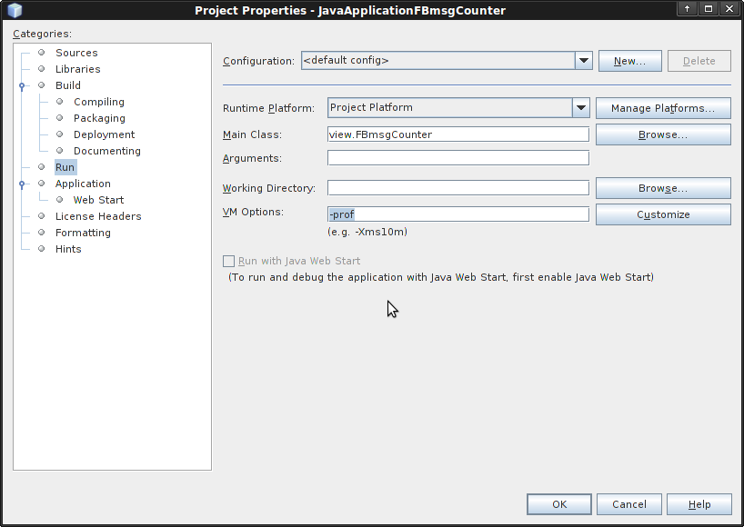
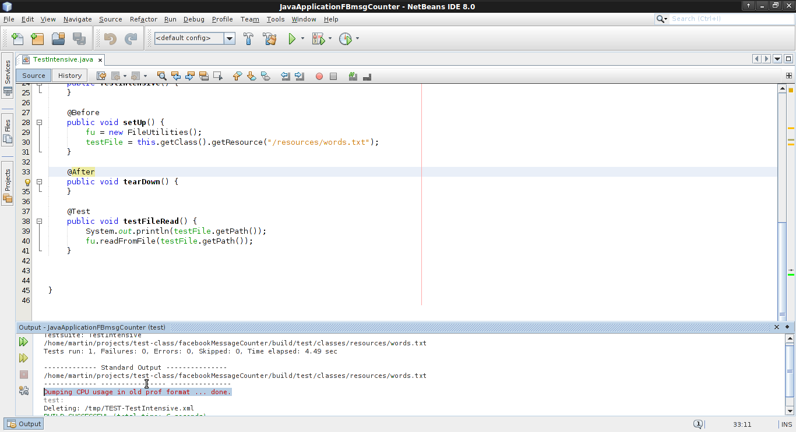

Netbeans contains a builtin cpu/memory profiler that produces general statistics about the cpu and memory usage over time. It also has useful statistics about threads allocated during runtime, classes loaded, etc. The following screenshots give a step-by-step tutorial on how to get the statistics. The target here is a unit test that tests reading a large file.
   As we can see nothing out of the ordinary for such a simple test.
One of the most important performance measuring techniques is the ability to get a list of function calls during execution with the number of times a particular function has been called as well as time it took for the calls. To activate this in Netbeans, create a runnable file/test and click on Properties:
After, in Run set the -prof flag inside the VM Options:
When the file runs there will be a line in the output which signifies that a java.prof file was created:
Here is a list of the top functions based on number of calls:
| count | callee | caller | time |
| 238763 | java.util.Arrays.copyOfRange([CII)[C | java.lang.String.<init>([CII)V | 272 |
| 236257 | java.util.ArrayList.ensureExplicitCapacity(I)V | java.util.ArrayList.ensureCapacityInternal(I)V | 224 |
| 236015 | java.util.ArrayList.ensureCapacityInternal(I)V | java.util.ArrayList.add(Ljava/lang/Object;)Z | 714 |
| 235027 | java.io.BufferedReader.ensureOpen()V | java.io.BufferedReader.readLine(Z)Ljava/lang/String; | 199 |
| 235027 | java.io.BufferedReader.readLine(Z)Ljava/lang/String; | java.io.BufferedReader.readLine()Ljava/lang/String; | 1818 |
| 234938 | java.io.BufferedReader.readLine()Ljava/lang/String; | utilities.FileUtilities.readFromFile(Ljava/lang/String;)Ljava/util/List; | 2388 |
| 234937 | java.util.ArrayList.add(Ljava/lang/Object;)Z | utilities.FileUtilities.readFromFile(Ljava/lang/String;)Ljava/util/List; | 1224 |
| 234748 | java.lang.String.<init>([CII)V | java.io.BufferedReader.readLine(Z)Ljava/lang/String; | 726 |
| 15262 | java.lang.String.charAt(I)C | java.io.UnixFileSystem.normalize(Ljava/lang/String;)Ljava/lang/String; | 20 |
| 12082 | java.lang.String.charAt(I)C | java.io.DataOutputStream.writeUTF(Ljava/lang/String;Ljava/io/DataOutput;)I | 11 |
| 10683 | java.lang.AbstractStringBuilder.ensureCapacityInternal(I)V | java.lang.AbstractStringBuilder.append(C)Ljava/lang/AbstractStringBuilder; | 12 |
| 9631 | java.lang.AbstractStringBuilder.append(C)Ljava/lang/AbstractStringBuilder; | java.lang.StringBuffer.append(C)Ljava/lang/StringBuffer; | 31 |
| 9509 | java.lang.String.charAt(I)C | org.apache.tools.ant.util.DOMElementWriter.encode(Ljava/lang/String;Z)Ljava/lang/String; | 7 |
| 9508 | org.apache.tools.ant.util.DOMElementWriter.isLegalCharacter(C)Z | org.apache.tools.ant.util.DOMElementWriter.encode(Ljava/lang/String;Z)Ljava/lang/String; | 9 |
| 9508 | java.lang.StringBuffer.append(C)Ljava/lang/StringBuffer; | org.apache.tools.ant.util.DOMElementWriter.encode(Ljava/lang/String;Z)Ljava/lang/String; | 58 |
| 7399 | java.lang.Math.min(II)I | java.util.Arrays.copyOfRange([CII)[C | 11 |
| 5805 | java.io.ByteArrayOutputStream.ensureCapacity(I)V | java.io.ByteArrayOutputStream.write(I)V | 8 |
We can see that java.util.Arrays.copyOfRange is the most called method, because we are transfering a file from the filesytem to RAM with ArrayList and every time we read a line a call to ArrayList.add is made so reading large files like that would be time-consuming. One solution is to make a method that reads only one line like that and returns. That would significantly improve performance if we want to read the title of something for example. Another way would be to know the file size in advance so we can prepare an adequate memory structure to hold it so we don't waste time allocating RAM. Finally caching could dramatically reduce delay for further uses or reading similar files, for example: read file, devide into appropriate sections, hash sections(or part of them) and create a meta file that contains hashes and byte ranges, read another file, read meta file of other file, if sections match - assemble file from cache without actually doing I/O on the file. In any case cathing bottlenecks is extreamly easy with a view like that, the hard part then is coming up with a solution to eliminate them.